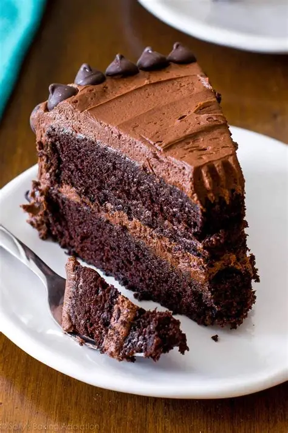

Delicious Chocolate Cake
Home

Description
This chocolate cake is rich, moist, and perfect for any occasion. The
recipe is easy to follow and uses simple ingredients you probably already
have in your kitchen.
Whether you're celebrating a birthday or just craving something sweet,
this cake will satisfy your chocolate cravings. Serve it with a scoop of
vanilla ice cream for an extra treat!
Ingredients
- 1 and 1/2 cups all-purpose flour
- 1 cup granulated sugar
- 1/2 cup unsweetened cocoa powder
- 1 teaspoon baking soda
- 1/2 teaspoon salt
- 1 cup water
- 1/3 cup vegetable oil
- 1 teaspoon vanilla extract
- 1 teaspoon vinegar
Steps
-
Preheat your oven to 180°C (350°F). Grease and flour a 9-inch round cake
pan.
-
In a large bowl, whisk together the flour, sugar, cocoa powder, baking
soda, and salt.
-
Add the water, vegetable oil, vanilla extract, and vinegar. Mix until
just combined and smooth.
- Pour the batter into the prepared cake pan.
-
Bake for 30-35 minutes, or until a toothpick inserted into the center
comes out clean.
-
Let the cake cool in the pan for 10 minutes, then transfer to a wire
rack to cool completely.
- Slice and serve. Enjoy your delicious chocolate cake!